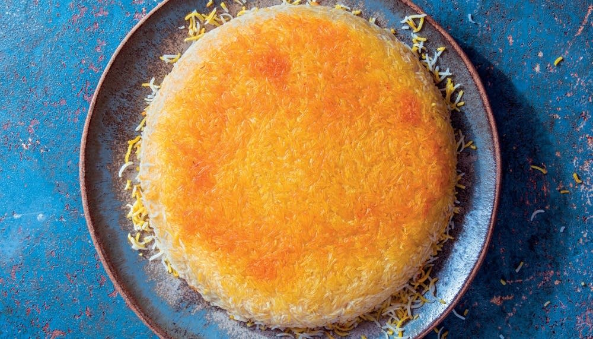

Tahdig - the king of Persian rice dishes!

Ingredients
2 cups basmati rice, rinsed very well
1/2 cup kosher salt
1/4 teaspoon saffron threads optional: ground with the bottom of a wooden spoon
3 tablespoons plain Greek yogurt
1 large egg
1 teaspoon turmeric
3 tablespoons unsalted butter
3 tablespoons olive oil
Steps
- Fill a large stockpot with 4 quarts of water and bring to a boil over high heat. Add ½ cup kosher salt (don't worry, you will not be eating all this!) Add the rice, and stir. Cook until al dente, 4-5 minutes. Drain and rinse with cold water to stop the cooking.
- If using saffron, mix 3 tablespoons of water with ground saffron threads in a microwave safe bowl. Microwave for 20 seconds and set aside.
- In a large bowl, mix Greek yogurt, egg, turmeric, and half the saffron water (if using). Remove 2 ½ cups of cooked rice and combine it with the yogurt mixture in the large bowl.
- Set a 10-inch or 11-inch nonstick or cast iron skillet or Dutch oven over medium heat, then add the butter and oil. When butter melts, add yogurt-rice mixture into pan and gently press it in and up the sides.
- Add remaining cooked rice into pan, making sure not to press into the pan and drizzle with remaining half of saffron water (if using). Turn heat up to medium high until rice is sizzling. Let cook.
- Let the rice cook for 5 minutes, then reduce heat to medium-low, cover with a lid wrapped with a clean towel and cook until rice is fully cooked and the edges are golden brown, 15-17 minutes.
- To remove rice, carefully run a rubber spatula along edges of pan. Top skillet with a plate that’s larger in circumference and carefully and swiftly flip the pan. Top with fresh dill and serve immediately.